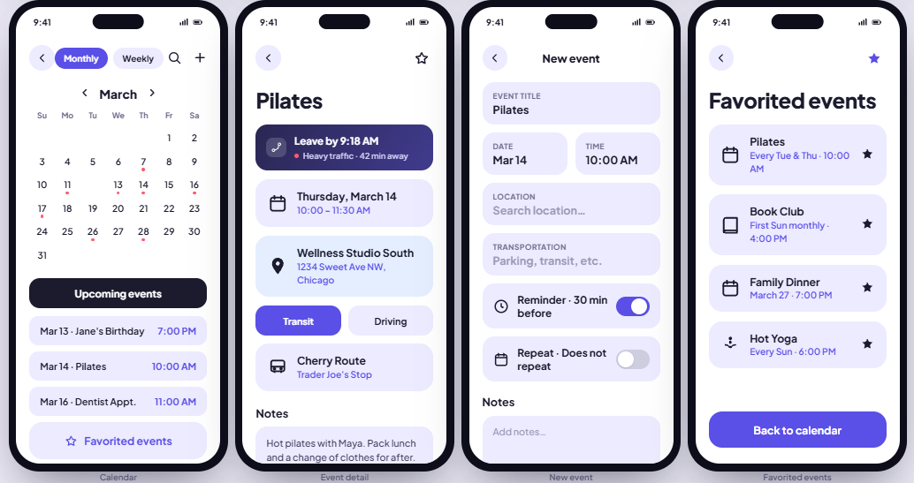
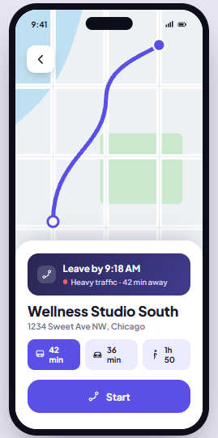

One app for the map, the calendar, and the translator — built to cut the cognitive load of juggling three tools to get out the door on time.
The problem
People use one app to navigate, another to track their schedule, and a third to translate signs in unfamiliar places. Constantly switching between them creates real cognitive overload: time-motion research shows frequent travelers spend 23–37% of their travel-related mental effort just managing their tools instead of actually traveling, and 45% report difficulty navigating unfamiliar environments.
Each person keeps a "fragmented mental inventory" of which tool to use when. Syncro's premise was to collapse maps, calendar, and translation into one cohesive system — and to prove, through evaluation, that the integrated design actually reduced that load.
What I owned
On a three-person team, I drafted the target-user research that grounded the design, created several of the high-fidelity prototype screens, and co-led one of our usability evaluation sessions. I also took one usability issue all the way through — finding it in evaluation, diagnosing the root cause, and designing the fix.
That issue was the missing public-transit support: the prototype couldn't help anyone who didn't drive. I designed a Transit Preferences screen where users toggle their modes (driving, public transit, walking, cycling, rail), set parking and walking buffers, and control "leave now" alerts — which made the app usable for the international-traveler persona it had been failing.
Designing for the room
The user research surfaced three personas who all hit the same wall — a calendar that doesn't talk to the tools they use to act on it.
Packed, back-to-back schedule across campus and city — sensitive to even small departure-time errors.
Moves between meetings and cities; needs reliable parking and walking buffers, most exposed to mid-trip traffic.
Leans on public transit and translation abroad — the persona that drove the transit and translation requirements.
The method
Rather than polishing screens and hoping, we ran a structured cognitive walkthrough on the paper prototype. Expert evaluators — classmates from other teams, with roles swapped each session — stepped through core tasks (using home/work shortcuts, opening the calendar, reading travel guidance, starting navigation) and answered four questions at every step: is the right action visible, will users recognize it, and will they understand the feedback afterward.
Each problem we found was rated on a 0–4 severity scale, then we prioritized the redesign around the issues with the highest severity and the biggest impact on core tasks.
The redesign
The findings fed directly into a high-fidelity prototype. A few decisions carried the whole thing: a calm pastel blue-and-purple palette chosen deliberately over stress-coded reds and oranges, a single oversized green "Get Directions" button as the one action that matters, and a simplicity-first layout to keep the interface from re-creating the overload it was meant to solve.


Beyond scheduling, the app builds a route from an event, suggests a departure time that updates with live traffic, and surfaces translation, saved locations, and travel preferences from one menu — so a calendar event becomes a single tap to "Get Directions."
Reflection